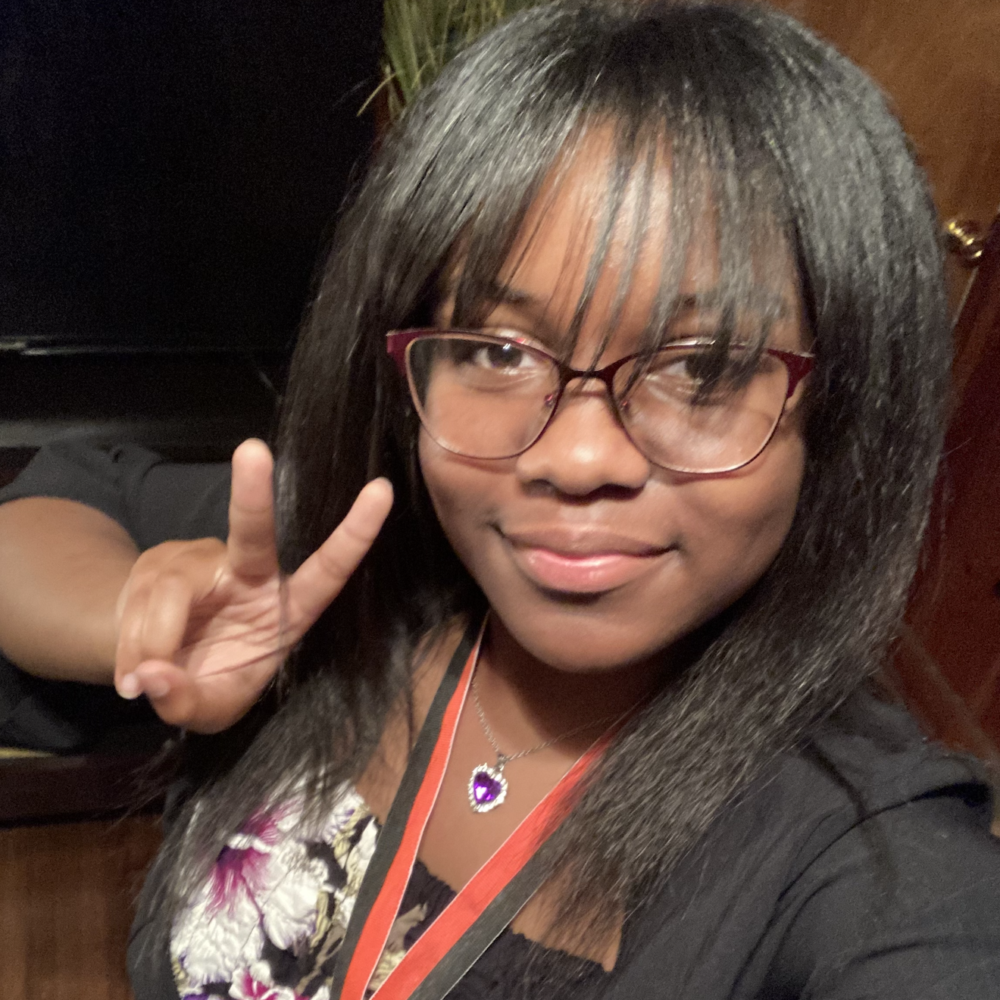
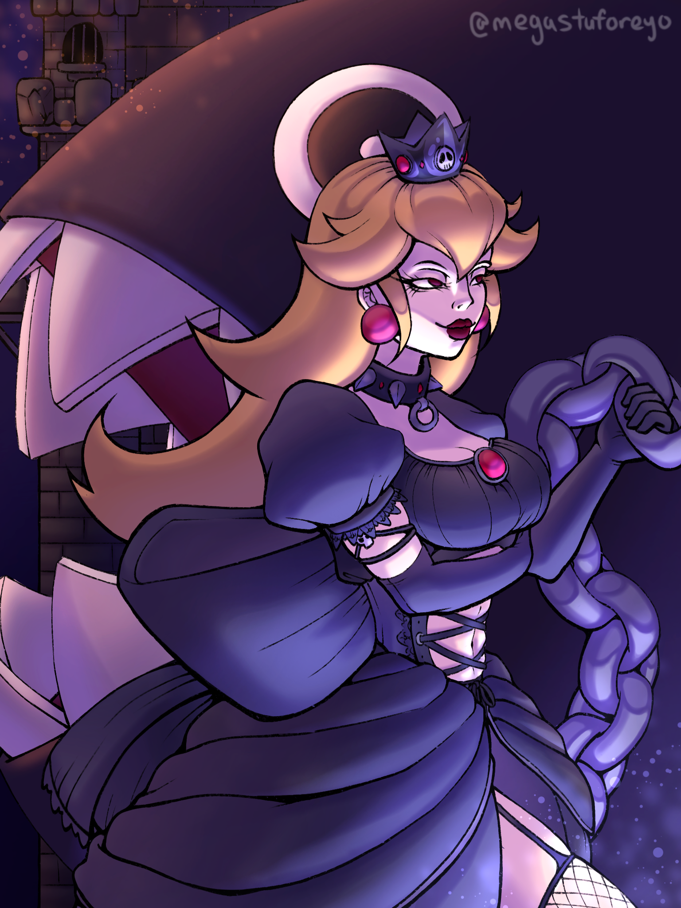
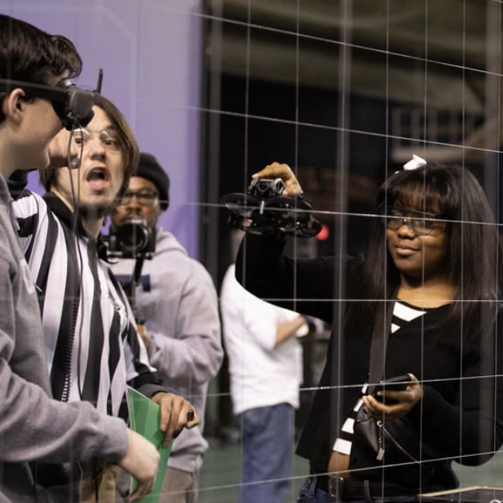
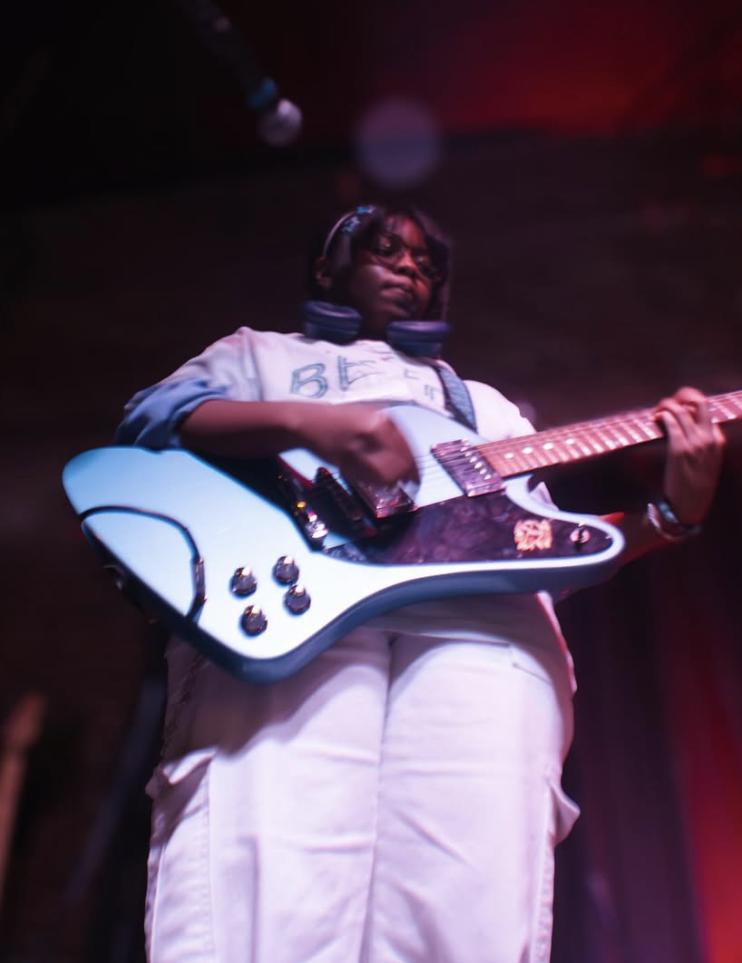

Hello! I'm Zariya (pronounced "Zah-ree-yuh") Scullark, a sophmore from Memphis, TN.
I currently attend Crosstown High School and maintain a 4.4 GPA.
I was born June 5th, 2009, which makes me 15-years-old!
My hobbies include drawing, gaming, playing guitar, dancing, annoying my cat, and hanging out with my friends.
Some of my favorite games are Mariokart 8 Deluxe, Stardew Valley, and Pokemon Sword.

Keep reading to see more cool stuff about me!
₍^. .^₎⟆
My Art

I have been drawing since kindergarten!
On my iPad, I would make animations
of stick figures doing cartwheels.
In elementary school, I was typically
drawing if not doing work. My passion
for art, however, began to drag
as I became focused on other things.
Nevertheless, art still serves as a
creative outlet for me. I will be
forever grateful for this skill
and how far I've come!
Robotics

Technology has always fascinated me.
The circuits, metals, math, the whole
engineering aspect of it looked cool.
Now, I am captain of my robotics team
and make the most of every opportunity
thrown at me.
I first competed in the Tennessee state
championships for Robot Drone League.
My team of three proudly left with
second place! In the worldwide tournament,
We scored 5th place overall and had an
awesome time. With the momentum from my
first two matches, I'm definitely looking
forward to more exciting competitions!
Music

I had been playing guitar since 4th grade.
There's no complex origin story behind it,
I just thought guitar was cool. I started
at Stax Music Academy, which is meant for
people who want to take it seriously, but
challenges are fun to me! From SMA, I met
Graham Burks and he invited me to his
band: Above Jupiter.
I play shows very frequently and love the
experience music has given me, as well as
the communities I've become a part of.
This is Astrid. He is a grey tabby cat. He showed up at my doorstep one morning in winter of 2020. My mom and I were decordating the Chistmas tree. I opened the door for him, and after a few seconds of him looking curiously into my home, he stepped in and became our beloved cat. The Vet let us know he was born in July, so we celebrate his birthday on July 1st.
He primarily enjoys wet food, whether it be tuna fish or chicken and gravy. Like all cats, he also enjoys to play with small, light objects. He occasionally sleeps at the foot of my bed. If I get lucky, he'll sleep right next to me. He's also not a fan of cameras, so it's hard to get nice, sophisticated pictures of him. No matter how much I have to clean his litter box or how many times he attacks me, I still love him infinitely.